The species that bring it to life
Every plant selected for fast growth, Melbourne climate suitability, visual beauty, and carbon sequestration potential. Organised by zone on the Digital Tree structure — with nitrogen-fixing species deliberately paired to feed the canopy vine.
Companion Planting System
The Digital Tree isn't just a collection of plants — it's a designed ecosystem. Nitrogen-fixing legumes (Kennedia, Hardenbergia, Running Postman) in the weeping planters actively enrich the growing environment, feeding the canopy vine above and accelerating growth across the entire system. This companion planting approach captures more carbon than any single species could alone: the legumes fix atmospheric nitrogen into the soil, the canopy vine converts it into massive biomass, and leaf litter from both feeds soil carbon below. The result is a self-reinforcing carbon sequestration loop.
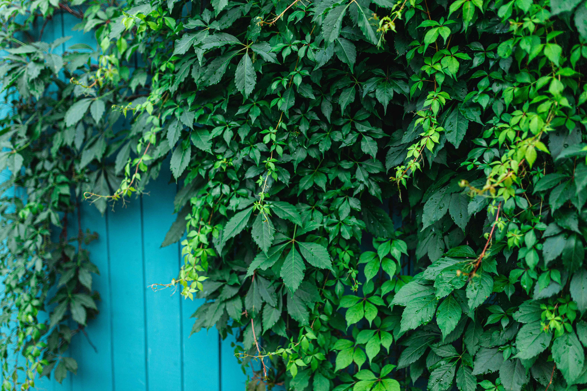
Virginia Creeper
Parthenocissus quinquefoliaPRIMARY canopy vine. Self-clinging tendrils grip the cable grid without assistance — no training required. Five-fingered leaves create a layered, textural canopy with dappled shade (ideal for streetscapes). 3–5m growth per year means full cable coverage within one growing season. Brilliant red and purple autumn display, then bare cables for winter sun. Massive leaf surface area drives high photosynthetic carbon capture. Woody perennial stems lock carbon permanently in biomass. Annual leaf litter adds organic carbon to the soil below.
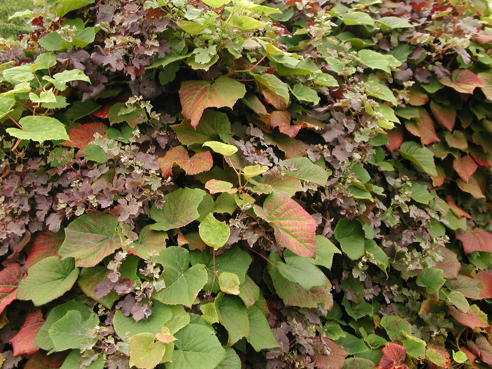
Crimson Glory Vine
Vitis coignetiaeALTERNATE canopy vine — for maximum shade density. Heart-shaped leaves up to 30cm across create significantly denser shade than Virginia Creeper. Massive woody stems = substantial permanent carbon storage locked in wood biomass. Grows 2–5m per year. Spectacular crimson, scarlet, and purple autumn colour. Disease-resistant and low-maintenance. Use where maximum shade is the priority (north-facing commercial strips), or companion-plant with Virginia Creeper for a layered effect.
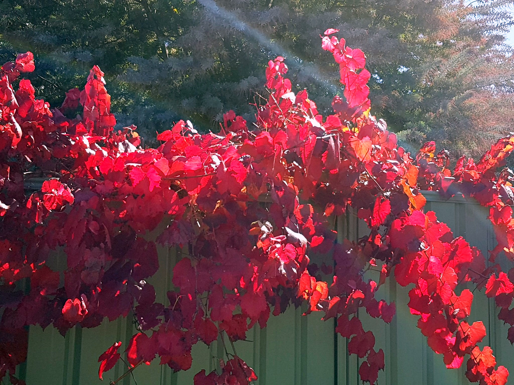
Ornamental Grape
Vitis 'Ornamental Grape' (Ganzin Glory)A vigorous non-fruiting hybrid widely grown in Australia. Glossy leaves emerge coppery, mature to grey-green, then blaze amber, orange, and brilliant red in autumn. Tendril climber that naturally grips cable trellis systems. Would provide excellent cable grid coverage as an alternative or companion to Virginia Creeper.
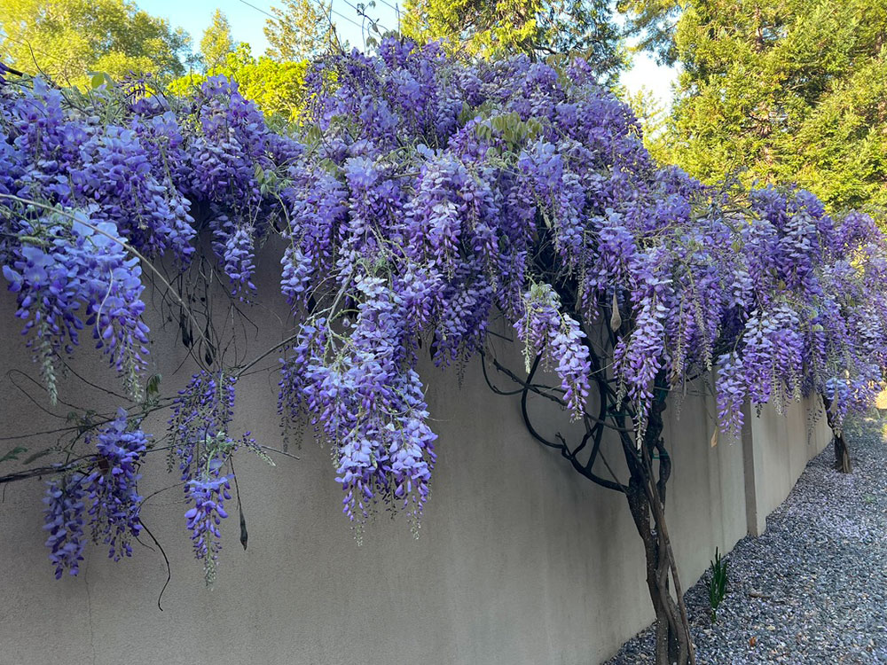
Wisteria
Wisteria sinensis / floribundaThe showstopper option. Massive cascading clusters of lilac, purple, or white flowers in spring before leaves emerge. Deciduous with dense summer canopy. Incredibly vigorous — the cable grid and curved arms are rated for this kind of load. People would travel streets to see these in bloom. A nitrogen-fixing legume itself — rare among canopy vines.
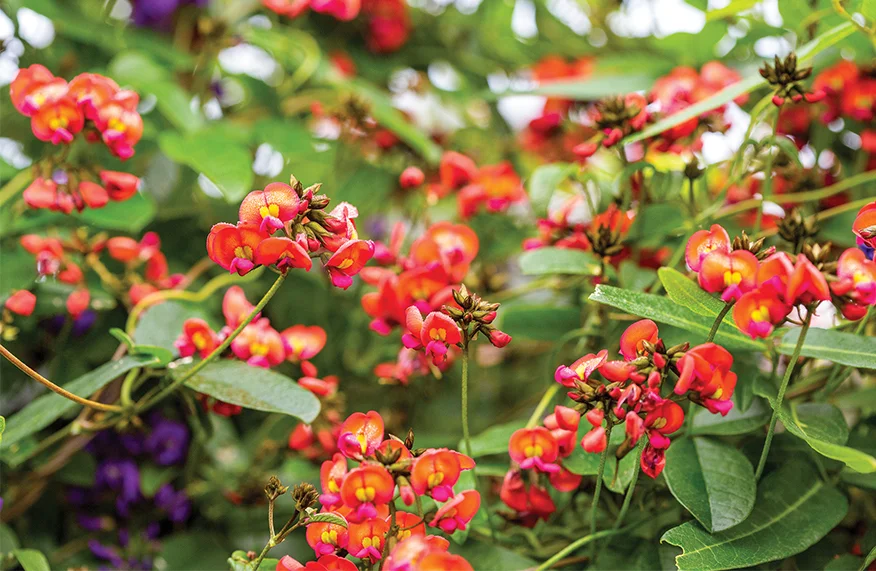
Dusky Coral Pea
Kennedia rubicundaA powerhouse Australian native. Dense dark green foliage with large dusky red pea flowers cascading from planter troughs. As a nitrogen-fixing legume, it doesn't just sequester carbon — it actively enriches the entire growing system, feeding nitrogen to the canopy vine above via root exudates and leaf litter. Carbon + nitrogen dual capture makes this the highest-value plant in the companion planting system.
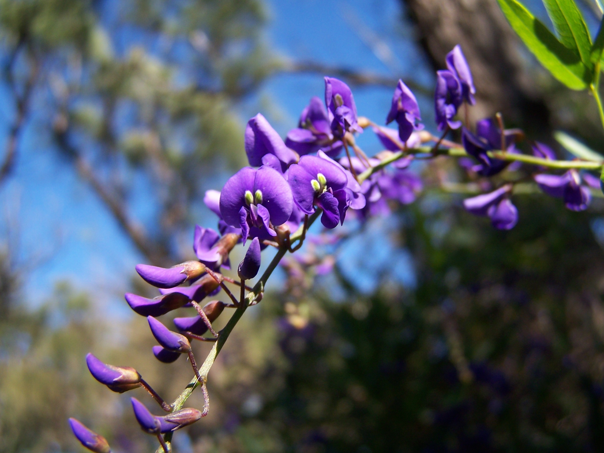
Purple Coral Pea
Hardenbergia violaceaA nitrogen-fixing legume with year-round photosynthesis (evergreen). Erupts with masses of deep purple pea flowers in late winter and early spring. Twining habit trails beautifully from planter troughs. Evergreen = continuous carbon capture through winter when the deciduous canopy is dormant. Tough in Melbourne conditions and supports native pollinators.
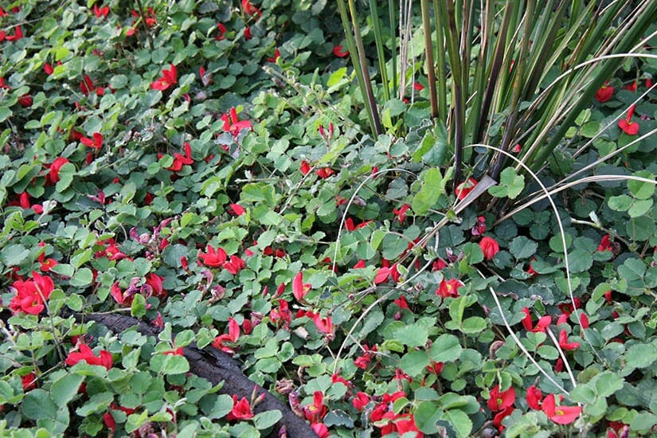
Running Postman
Kennedia prostrataOne of Australia's most striking native trailing plants. Long prostrate stems cascade 2–3 metres from planter troughs, covered in bright scarlet pea flowers against dark green trifoliate leaves. A nitrogen-fixing legume — carbon + nitrogen dual capture, actively enriching the growing environment while creating a spectacular cascading display. Extremely tough and drought-tolerant.
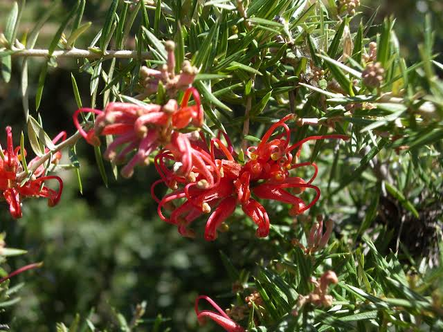
Grevillea Royal Mantle
Grevillea 'Royal Mantle' / 'Poorinda Royal Mantle'Spreading, cascading native that drapes over planter edges with dense dark green toothbrush-like foliage and red spider flowers. Dense evergreen biomass = continuous carbon capture. Bird-attracting flowers bring honeyeaters and lorikeets — an ecosystem multiplier that creates native habitat value on every street. Incredibly drought-tolerant.
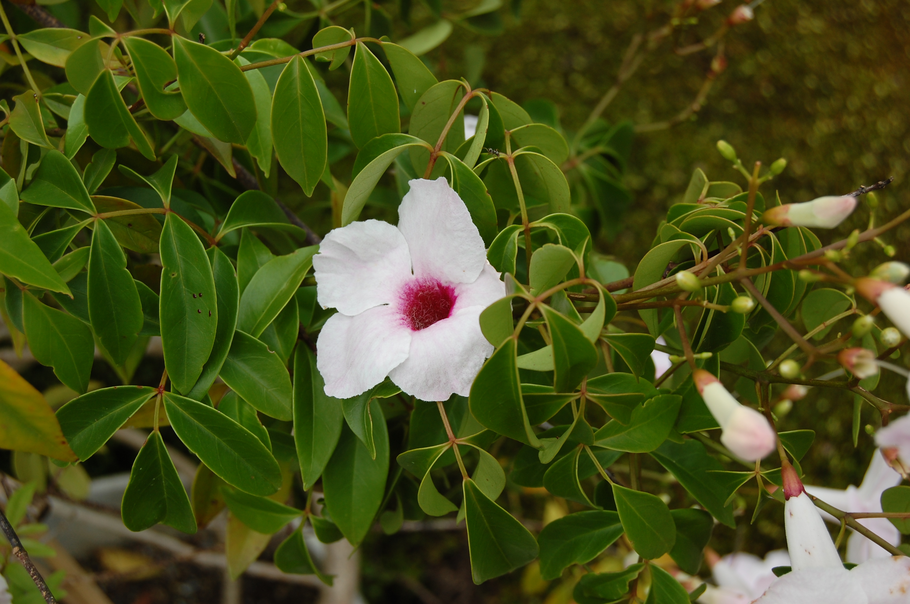
Bower Vine
Pandorea jasminoidesAustralian native with glossy dark green foliage year-round and trumpet-shaped pink/white flowers through summer and autumn. Evergreen = year-round carbon capture even when the deciduous canopy is bare. A refined, less vigorous climber — perfect for planter troughs where you want fullness without aggression. Handles Melbourne frosts well.
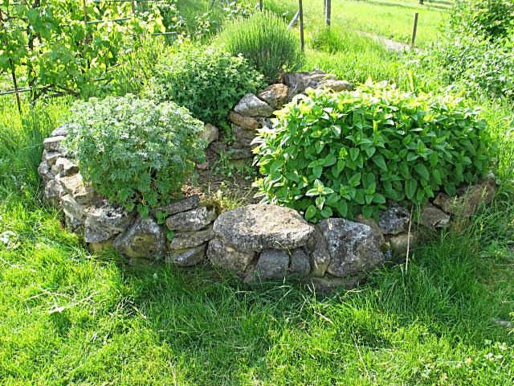
Community Herb Pots
Rosemary, Thyme, Oregano, MintLower-level accessible pots with culinary herbs that residents can pick freely. Rosemary and thyme are essentially indestructible in Melbourne, fragrant, and evergreen. Creates the "community pantry" concept — your street tree feeds you. Mint trails beautifully and grows aggressively in contained pots.
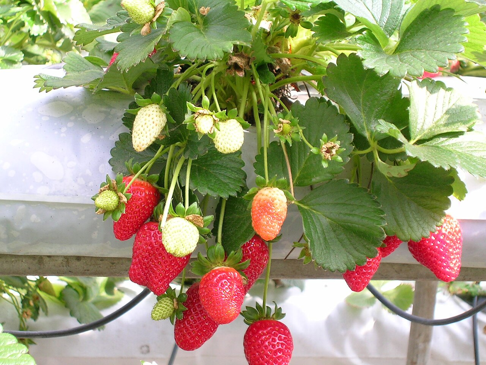
Strawberry
Fragaria × ananassaCommunity engagement in a pot. Trailing strawberry runners cascade from base-level pots, producing fruit that residents — especially kids — can pick. Creates genuine ownership and connection with the Digital Tree. Easy to grow in pots, and runners naturally fill out the structure.
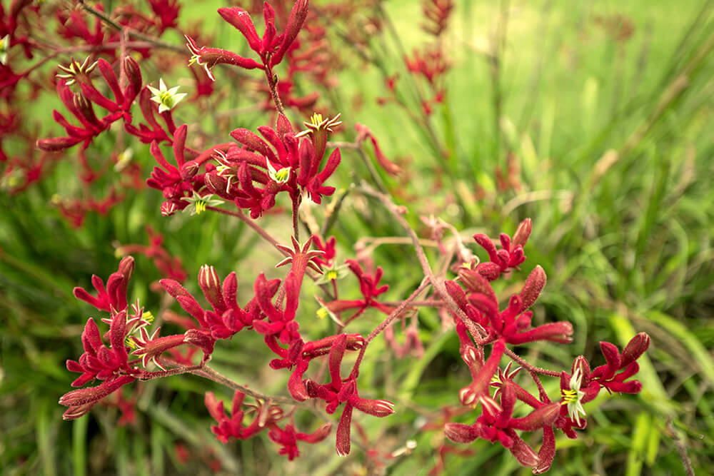
Kangaroo Paw
Anigozanthos flavidusIconic Australian native with striking architectural flower spikes in red, yellow, orange, or green. Attracts birds and native pollinators. Dramatic vertical colour accents at the base of the Digital Tree. Extremely drought-tolerant and thrives in full sun. Perfect native accent that signals "this is an Australian street tree."
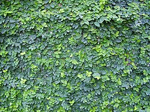
Creeping Fig
Ficus pumilaThe trunk disguiser. A self-clinging evergreen vine with tiny, neat leaves that covers the aluminium pole itself, making it look like a living trunk. Grows flat against surfaces and is virtually indestructible. Within 2–3 years the pole structure is completely hidden under a skin of green.
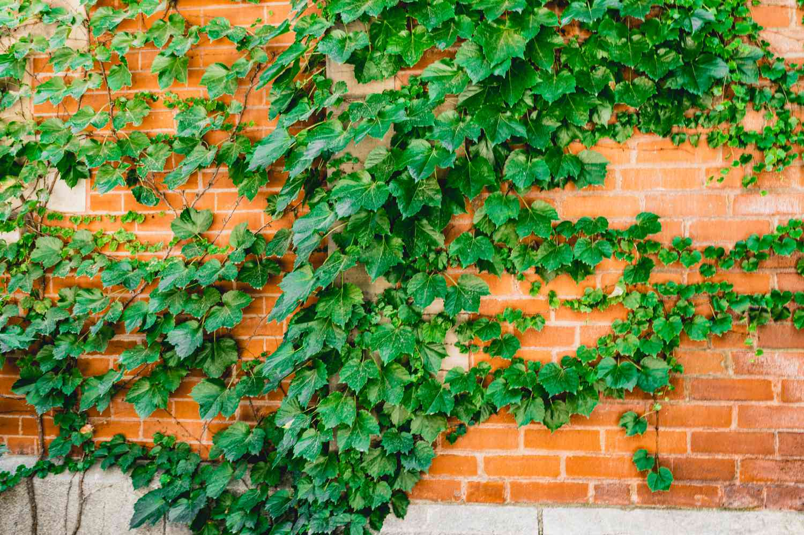
Boston Ivy
Parthenocissus tricuspidataA self-clinging deciduous vine that rapidly covers the lower pole and arm structure with a dense tapestry of three-lobed leaves. Fresh green in spring and summer, turning brilliant scarlet and crimson in autumn. Works with creeping fig — Boston Ivy on the upper trunk, creeping fig on the lower.
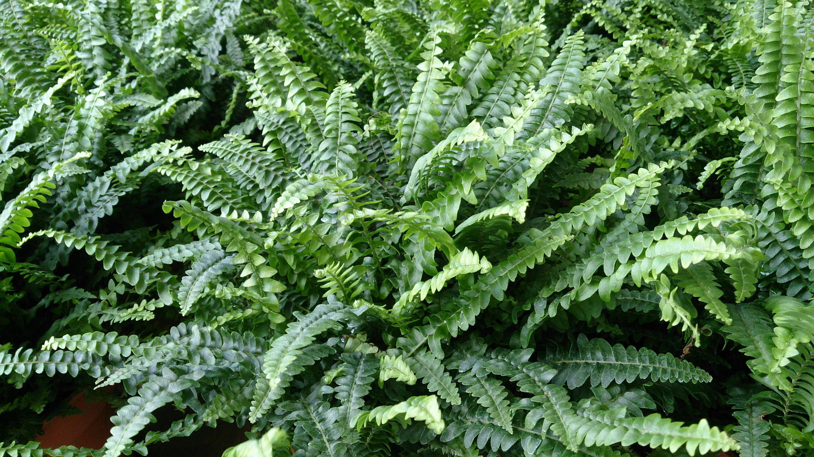
Boston Fern
Nephrolepis exaltataThe classic hanging basket plant — arching, feathery fronds that create a lush, tropical feel. Perfect for the sheltered, shadier side of the Digital Tree where other plants might struggle. Softens the structure beautifully and adds a layer of green texture that reads as very natural.
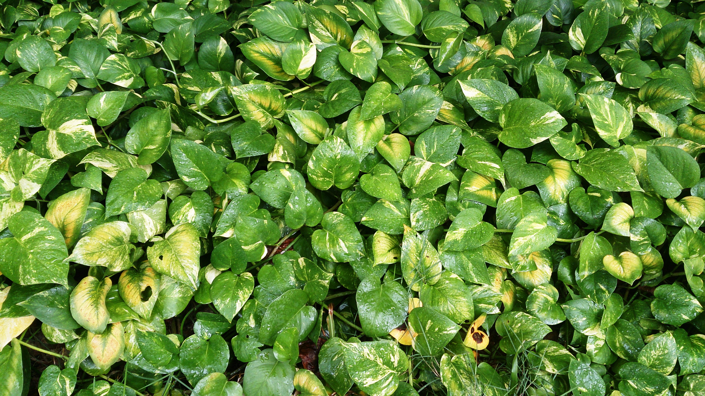
Devil's Ivy / Pothos
Epipremnum aureumOne of the toughest trailing plants on earth. Heart-shaped variegated leaves cascade metres downward. Virtually unkillable. In sheltered positions on the lower structure, it creates lush tropical trailing curtains. Needs frost protection in Melbourne — position on the sheltered side.
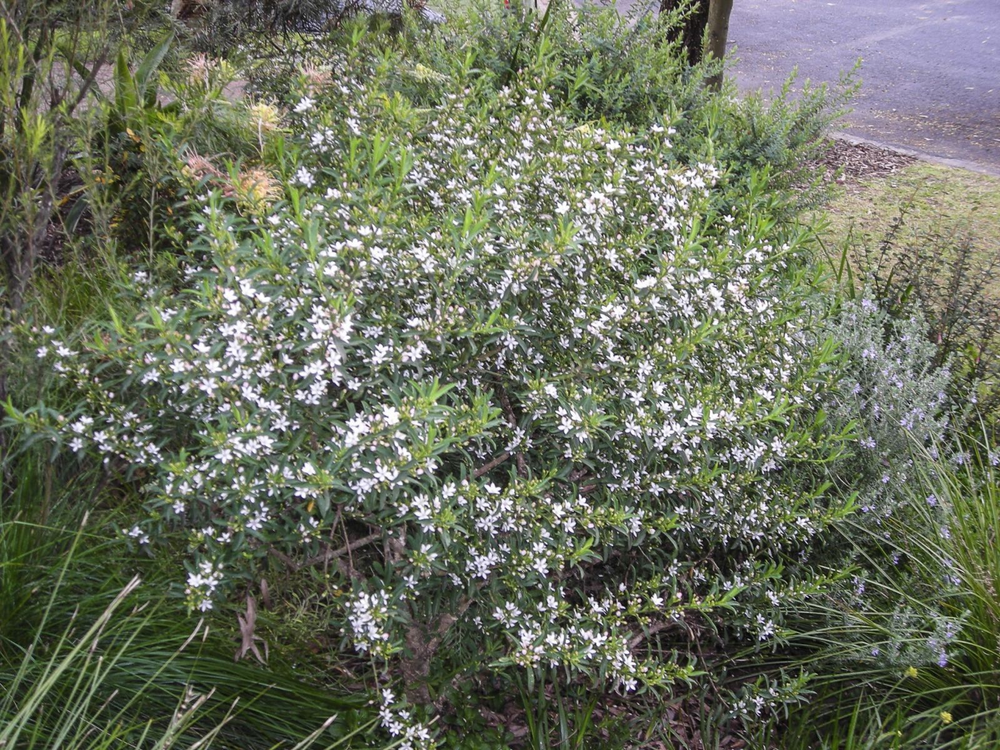
Native Wax Flower
Hoya australisAustralia's native answer to Devil's Ivy. A trailing and climbing vine with thick, glossy, waxy leaves and clusters of fragrant star-shaped white flowers with pink centres. Trails 2–3 metres from elevated positions. Naturally grows as an epiphyte in Australian rainforests — perfectly suited to life on the Digital Tree structure.

Silver Falls
Dichondra argentea 'Silver Falls'Waterfall-like cascades of tiny silvery fan-shaped leaves that shimmer in the breeze. One of the most spectacular trailing plants available — looks like liquid silver pouring down the structure. Extremely drought-tolerant and fast growing. Stunning contrast against darker green foliage.